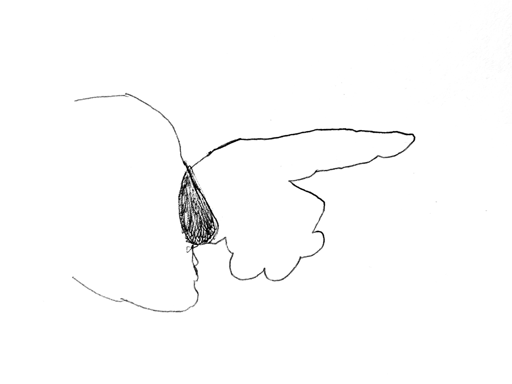
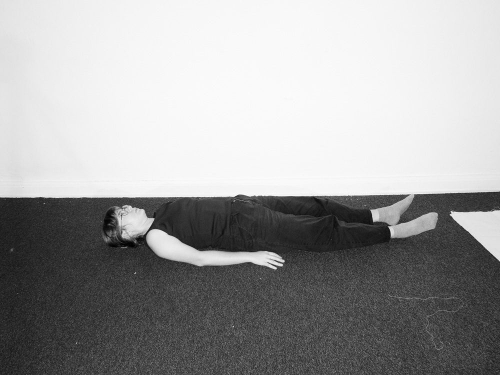
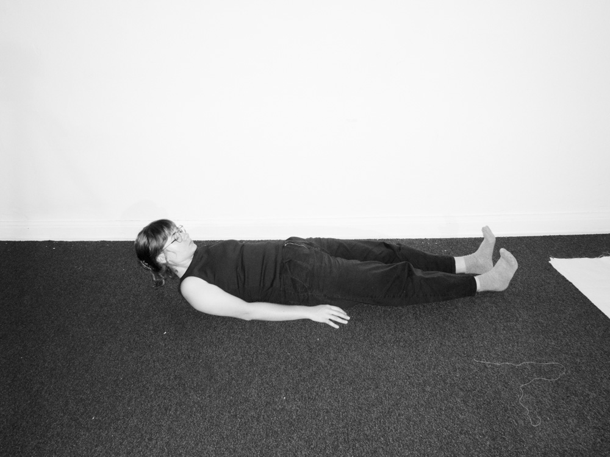
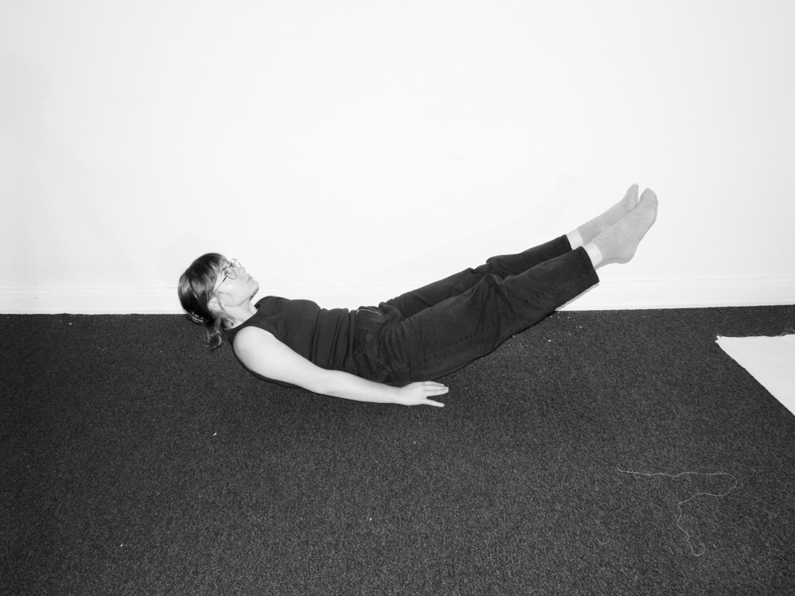
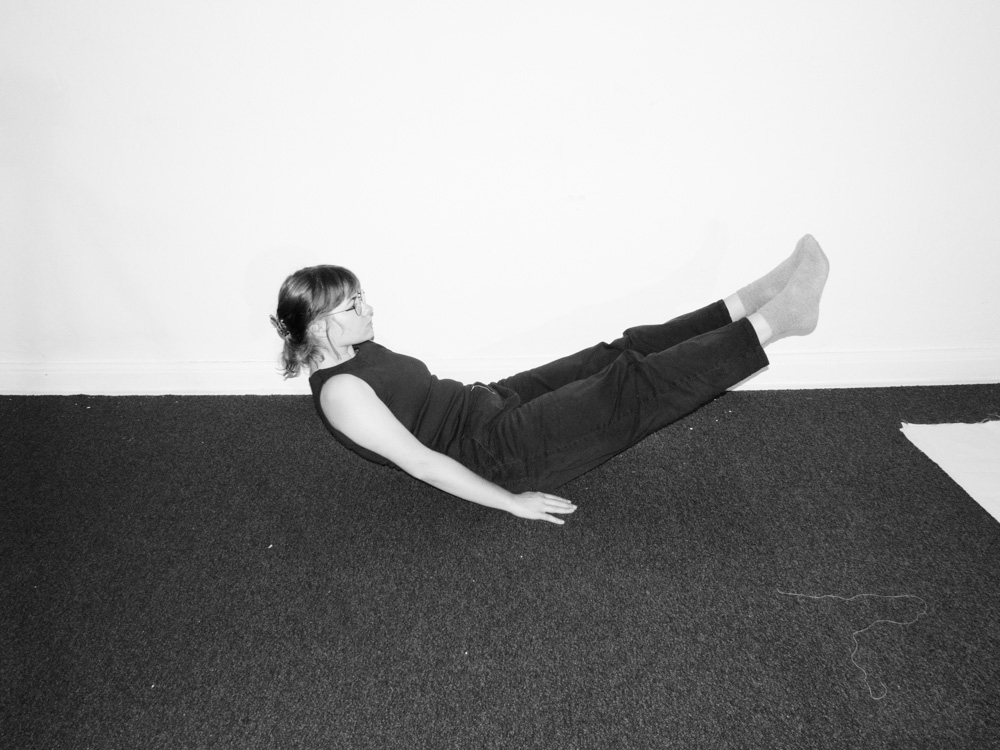
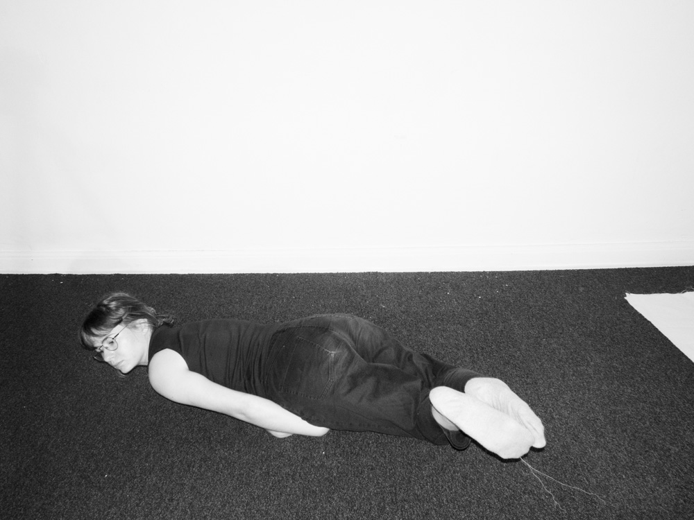
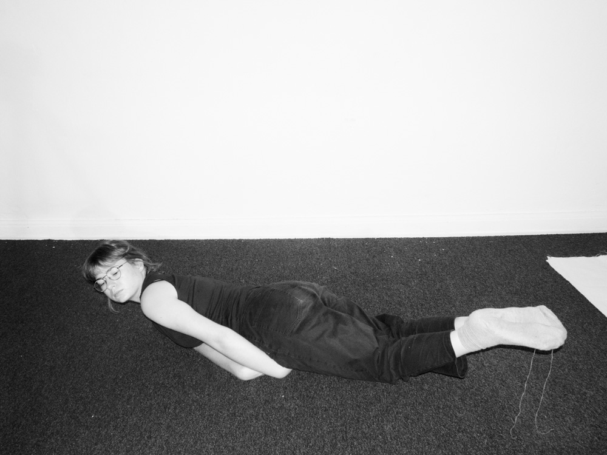
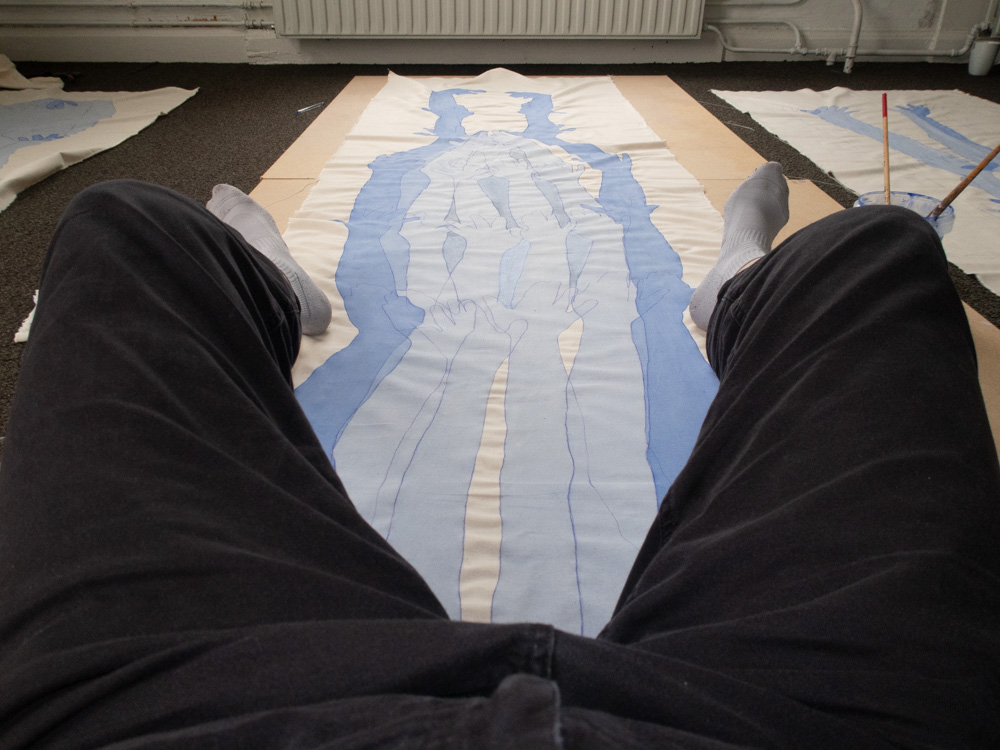
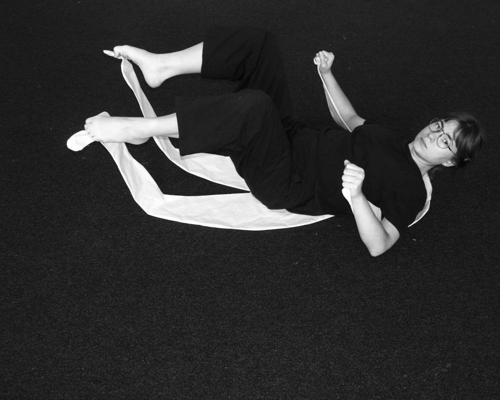
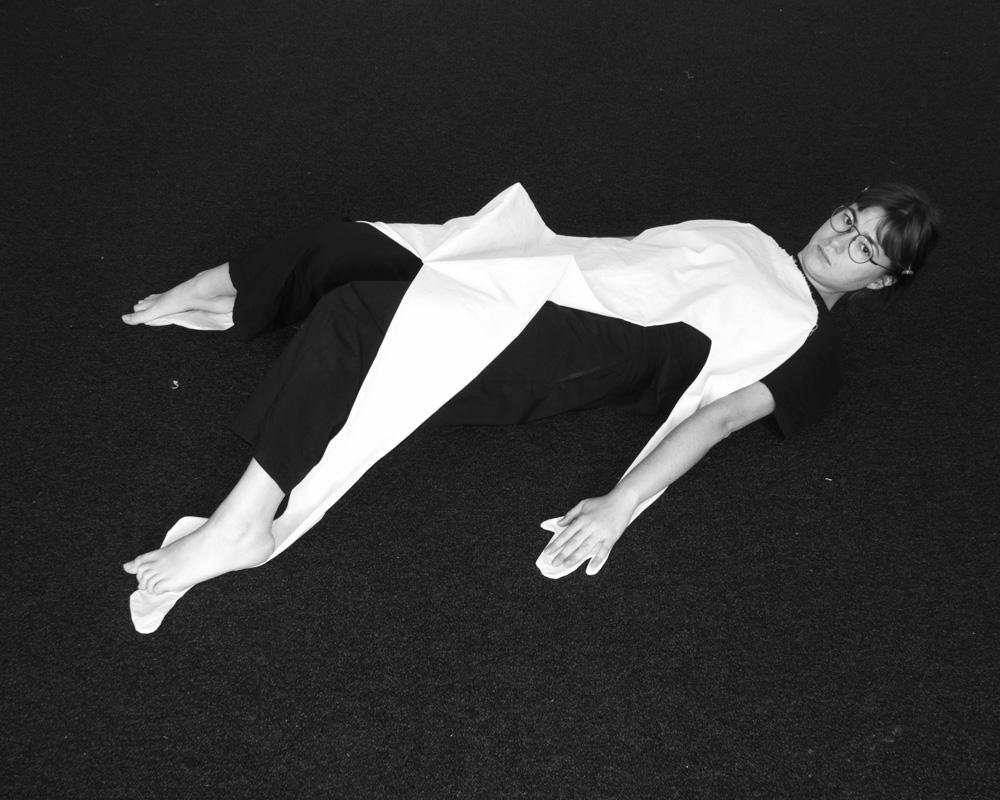

|
"...when we begin to live from within outward, in touch with the power of the erotic within ourselves, and allowing that power to inform and illuminate our actions upon the world around us, then we begin to be responsible to ourselves in the deepest sense."
Audre Lorde (the Uses of the Erotic 1978 p90)
i am feeling ok to move my arms like window doors. one window door i keep closed so if the wind moves i won’t be locked outside. for the window to close shut, both doors must be closed at the same time. not one or the other, both. they interlock and are pushed inwards. i push toward me, this where they meet my chest,
and the chest hugs a single point in the tissue, or between the tissue that must be my lungs.
my issue, why i obsess and fatigate over form. it is with form i sleep with at night before looking and checking if my wrists have again switched sides. the front is now the back is now the front. for i don’t know which side is facing me. if the palm of the hand was the front it would be called the front of the hand. as a palm is a measurement. the stretching of the palm, not of the hand or the fingers, with sensation pointing inwards. not pointing, standing, as i do outside it.
yesterday i was looking at both my hands, before sleeping. i questioned whether i had been already asleep from the moment i entered this bed, in this bedroom, not mine. my hands seemed to me untangible.
|
|
i live with a hand inside mine, i put mine outside so there is space for both. if wind could fit inside my hand its shape wouldn’t stay so long in the wall i lean my body against. between myself and the wall there is my airy hand.
lets not let the hands take over touch. i touch the cheek to the shoulder so i pretend to be two. there is an external force caressing me at night after i pushed all my day’s experience to where the forehead is supposed to be, the hardened place. and all this experience becomes one, no loose threads to pull away from the edge of the body to the interior edge of my stomach, where they’d get digested with no further pressuring of thought.

when writing, i stop at ‘and’ (the full stop is the time after the ‘d’). i stop and repeat i repeat i go and i take one breath in and close the eyes where the oxygen passes through. if it wasn’t for the mouth where would we be.
i wonder if writing is some force with a will of itself, it comes from the fingertips, i feel it across the hand when the will is not resolved. to write i must be willing, and i think it is not something given if wished upon.
will, not as want, as force pulled from the body that it carries forward. the body alone is not to withstand movement.
why can i not just gather the courage to cut the tip of this indicating finger to see check verify there was always sense inside.
 |
 |
 |
 |
 |
 |
not my pointing, not no never pointing as there will always be someone there behind what you point, aaaaah presence stuffing, it comes out of my nose i touch when i am afraid. my nose that leads the way (no pointing). ah, but i point out, i point out wards.
and sense leaves me again. when it is pointed out then we need no the word.
“There where it smells of shit
it smells of being.
Man could just as well not have shat,
not have opened the anal pouch,
but he chose to shit
as he would have chosen to live
instead of consenting to live dead.
Because in order not to make caca,
he would have had to consent
not to be,
but he could not make up his mind to lose
being,
that is, to die alive.
There is in being
something particularly tempting for man
and this something is none other than
CACA.
(Roaring here.)”
antonin artaud (TO HAVE DONE WITH
THE JUDGEMENT OF GOD, 1947)
a privilege it is to fart, and say it out loud, pffffffft or brrrrt.
think of the last time you had to hold inside what wants so desperately to come out. caca here is the same as thought.
those who could've always spoken i do not call by name. the trick they do is to speak anyways, always, as if someone had done so. no one calls you to speak unless you stand in line for the toilet.
i notice people don't communicate when there is no more toilet paper. has it always been like this? do the men warn each other? i guess women are expected to come prepared with tissues. i wonder what a gentleman with an anchorchief feels after sitting down and realizing there is toilet paper no more.

how am i not greeting the world. is it not greeting me first or second? am i not reaching with my hand? have i been pretending? should i extend both arms? should i extend, retreat, extend again- two of my arms?
arm for hand, hand for arm for head i give. my thoughts are mascarading themselves as something other than thought. they approach me with a changed face. thought, the impossible medium.
when were these other times i have failed? have i lied to myself when i say i reach my hand out to you? am i doing it not-for-myself? because i want you to consider me a myself? is it so external, how i don’t feel it anymore?
i am pointing outwards holding the fingertip at my nose outside the window. i let the street smell me so i don’t have to go with the body outside,
,i become, small steps, tired of outlining my experience. i say it again, to be sure. i become tired of outlining my experience. i believe the awaited time, how many years has it been?, arrived. approximetely 308 hours over 28 days working, crying, sensing god, sensing my mother touch my back, illuminated with beauty and understanding, in a clear and hungry state. i am sure, my head is hardening as i sense myself maturing, into a self i am now curious about. i have successfuly convinced myself i can be a fitting home for a self. i am now with the will of experiencing my experience as a bodily, sensual and emotional phenomena.
“I am, in large measure, the selfsame prose I write... I’ve made myself into the character of
a book, a life one reads. Whatever I feel is felt (against my will) so that I can write that I
felt it. Whatever I think is promptly put into words, mixed with images that undo it, cast into rhythms that are something else altogether. From so much self-revising, I’ve destroyed
myself. From so much self-thinking, I’m now my thoughts and not I. I plumbed myself and
dropped the plumb; I spend my life wondering if I’m deep or not, with no remaining plumb
except my gaze that shows me – blackly vivid in the mirror at the bottom of the well – my
own face that observes me observing it.”
Fernando Pessoa (the book of disquiet, (Text 193, dated 2 September 1931))
 
joana, i swear and promise, your head will be attached to your body without the extra force.
as i breathe again the island’s humidity disguised as breathable air, i let it in and fill myself with what was mine to begin with. speaking with a friend found, as many i do, passing by this land for a short period of time, i understood my desire to connect with the island is to find something of myself i had not forgotten but denied access to since before i left when i was eighteen. if i am uncomfortable here it means i must habitate this place, not where it is easy to be no one. this rejection of self as i rejected this land and culture and people. people so good i now see how being around the artist’s bubble for so long made me weary of humanity. artists can be so difficult and self-centred (myself included), so ingrained in their ways. o god what was this closed eye hiding, people as people, caring and attentive people i’ve been finding. it is possible just do not look inside the self-made bubble masquerading as moral high ground.
ser da ilha faz-me expecial. tenho as minhas raízes na ilha. dão-se em água com sal. as raízes crescem, eu sou as minhas raízes, vêm da ilha, não minha. nós somos ilha. as raízes crescem e dão-me a impressão de estar longe, quando estou perto. os meus dedos, caules, foram comigo lá fora e sentem-se um longe permanente. estarão longe, não crescem ao contrário. as raízes ficam ou morrem, vivem pelo que deram às outras lá onde ficaram. voltar à semente parece-se com morte. como se chama quando o caule entra de novo na sua semente? vou-me re-inserir em mim com força. parece-se com morte se lá entrarmos, então morremos. re-forçar faço quando volto. reforço os hábitos. viver com os cantos dos telhados das casas que tocam no céu que toca no mar e na terra que toca na rua e nas casas.
|